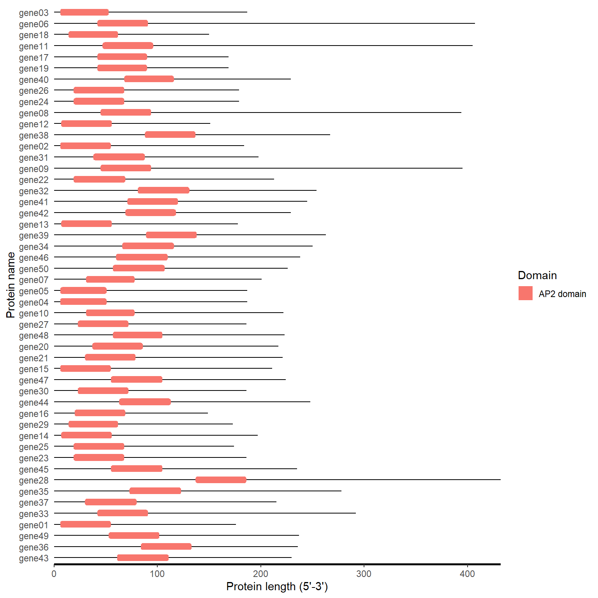
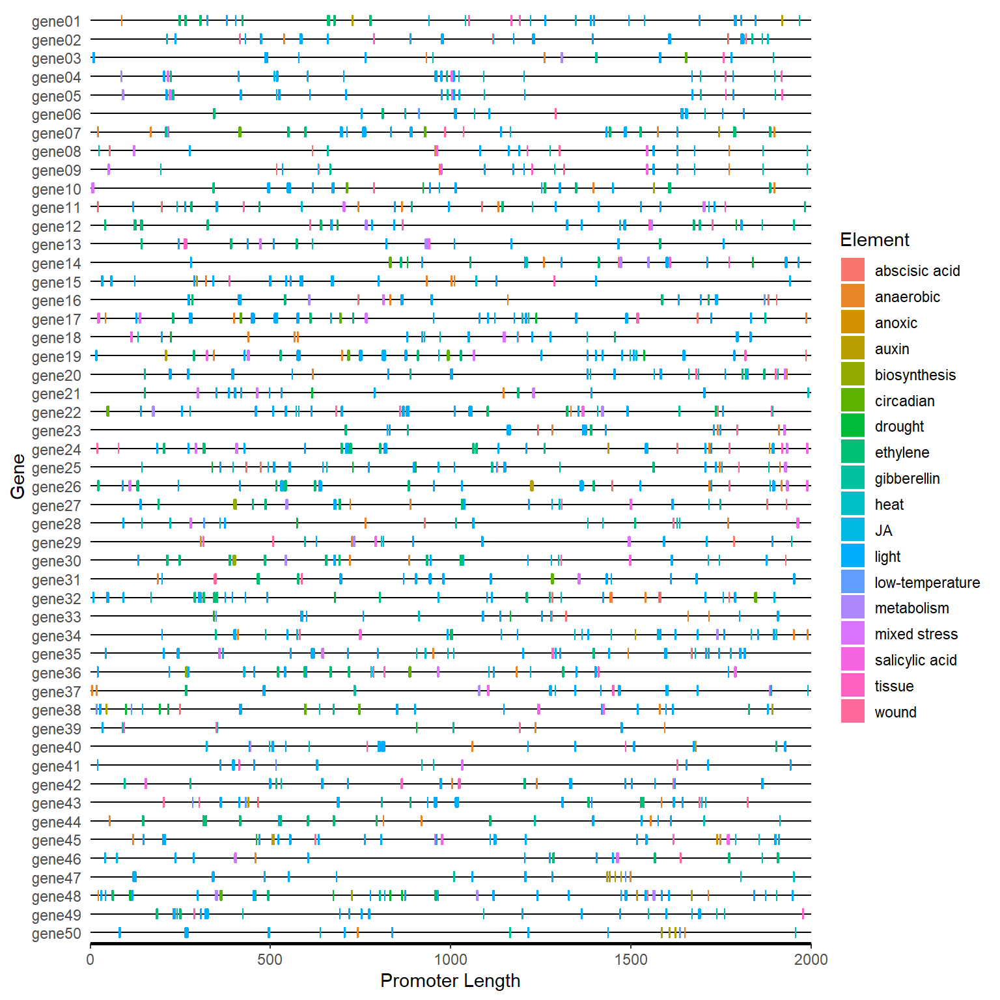
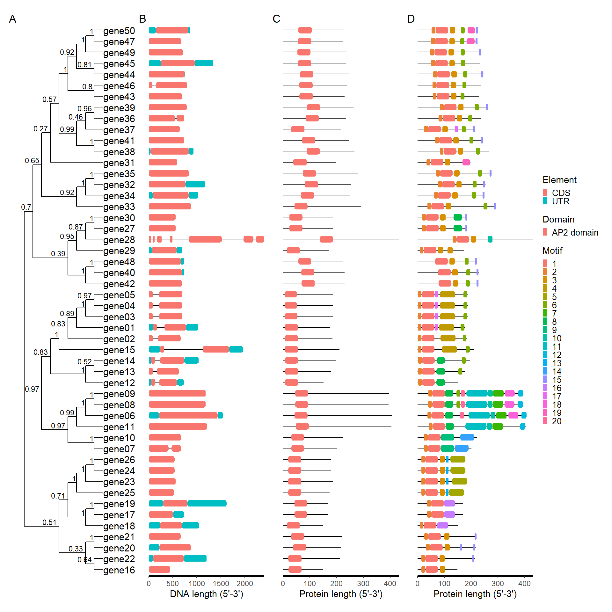

1. Introduction
The goal of BioVizSeq is to visualize the types and distribution of elements within bio-sequences. At the same time, We have developed a geom layer, geom_rrect(), that can generate rounded rectangles. No external references are used in the development of this package.
2. Installation
Install from CRAN:
# Install from CRAN
install.packages("BioVizSeq")Install from Github: the development version of BioVizSeq:
install.packages("devtools")
devtools::install_github("zhaosq2022/BioVizSeq")3. Libary packages
library(BioVizSeq)
#> Registered S3 methods overwritten by 'treeio':
#> method from
#> MRCA.phylo tidytree
#> MRCA.treedata tidytree
#> Nnode.treedata tidytree
#> Ntip.treedata tidytree
#> ancestor.phylo tidytree
#> ancestor.treedata tidytree
#> child.phylo tidytree
#> child.treedata tidytree
#> full_join.phylo tidytree
#> full_join.treedata tidytree
#> groupClade.phylo tidytree
#> groupClade.treedata tidytree
#> groupOTU.phylo tidytree
#> groupOTU.treedata tidytree
#> inner_join.phylo tidytree
#> inner_join.treedata tidytree
#> is.rooted.treedata tidytree
#> nodeid.phylo tidytree
#> nodeid.treedata tidytree
#> nodelab.phylo tidytree
#> nodelab.treedata tidytree
#> offspring.phylo tidytree
#> offspring.treedata tidytree
#> parent.phylo tidytree
#> parent.treedata tidytree
#> root.treedata tidytree
#> rootnode.phylo tidytree
#> sibling.phylo tidytree
#> Package BioVizSeq loaded successfully!
# Extra package
library(ggplot2)
#> Warning: 程辑包'ggplot2'是用R版本4.3.3 来建造的4. Usage cases
4.1 GFF/GTF
gff or gtf file
4.1.1 Step by step
gff_path <- system.file("extdata", "idpro.gff3", package = "BioVizSeq")
gff_data <- read.table(gff_path, header = FALSE, sep = '\t')
gff_loc <- gff_to_loc(gff_data)
motif_plot(gff_loc$table_loc, gff_loc$gene_length) +
labs(x="DNA length (5'-3')", y="Gene name")
4.1.2 One step
gff_path <- system.file("extdata", "idpro.gff3", package = "BioVizSeq")
gff_plot(gff_path)
4.2 MEME
meme.xml or mast.xml
4.2.1 Step by step
meme_path <- system.file("extdata", "meme.xml", package = "BioVizSeq")
meme_file <- readLines(meme_path)
motif_loc <- get_motif_location(meme_file)
motif_plot(motif_loc$table_loc, motif_loc$gene_length)4.2.2 One step
meme_path <- system.file("extdata", "meme.xml", package = "BioVizSeq")
meme_plot(meme_path)
4.3 PFAM
Download: .tsv
4.3.1 Step by step
pfam_path <- system.file("extdata", "iprscan.tsv", package = "BioVizSeq")
pfam_file <- read.table(pfam_path, sep='\t', header = FALSE)
domain_loc <- pfam_to_loc(pfam_file)
motif_plot(domain_loc$table_loc, domain_loc$gene_length)
4.3.2 One step
pfam_path <- system.file("extdata", "iprscan.tsv", package = "BioVizSeq")
pfam_plot(pfam_path)
4.4 CDD
Download “Superfamily Only”
Type: .txt
4.4.1 Step by step
hitdata_path <- system.file("extdata", "hitdata.txt", package = "BioVizSeq")
cdd_file <- readLines(hitdata_path)
domain_loc <- cdd_to_loc(cdd_file)
fa_path <- system.file("extdata", "idpep.fa", package = "BioVizSeq")
gene_length <- fastaleng(fa_path)
motif_plot(domain_loc, gene_length)4.4.2 One step
hitdata_path <- system.file("extdata", "hitdata.txt", package = "BioVizSeq")
fa_path <- system.file("extdata", "idpep.fa", package = "BioVizSeq")
cdd_plot(hitdata_path, fa_path)
4.5 SMART
protein file (.fa or .fasta)
4.5.1 Step by step
fa_path <- system.file("extdata", "target.fa", package = "BioVizSeq")
domain_loc <- smart_to_loc(fa_path)
#> Submitting sequence AtAP2_002...
#> Submitting sequence AtAP2_003...
#> Job entered the queue with ID12315310532207961734854988nxRvSILzcN. Waiting for results.
#> Submitting sequence AtAP2_004...
#> Submitting sequence AtAP2_005...
motif_plot(domain_loc$table_loc, domain_loc$gene_length)
4.5.2 One step
fa_path <- system.file("extdata", "target.fa", package = "BioVizSeq")
smart_plot(fa_path)
#> Submitting sequence AtAP2_002...
#> Submitting sequence AtAP2_003...
#> Job entered the queue with ID12315310532216911734855018RDVNZgsHWd. Waiting for results.
#> Submitting sequence AtAP2_004...
#> Submitting sequence AtAP2_005...
4.6 Plantcare
promoter sequence(.fa or .fasta)
4.6.1 Step by step
# 1. upload fasta file to plantcare, get the result file(.tab)
# upload_fa_to_plantcare(fasta_file, email)
# 2. Classify the functions of cis element
plantcare_path <- system.file("extdata", "plantCARE_output.tab", package = "BioVizSeq")
plantcare_file <- read.table(plantcare_path, header = FALSE, sep = '\t', quote="")
plantcare_data <- plantcare_classify(plantcare_file)
plantcare_loc <- plantcare_to_loc(plantcare_data)
promoter_length <- data.frame(ID = unique(plantcare_loc$ID), length=2000)
motif_plot(plantcare_loc, promoter_length) +
labs(x="Promoter Length", y="Gene")
4.6.2 One step
plantcare_path <- system.file("extdata", "plantCARE_output.tab", package = "BioVizSeq")
plantcare_plot(plantcare_path, promoter_length = 2000)4.7 Advance Plot
p_tree, p_gff, p_pfam, p_meme, p_smart, p_cdd, p_plantcare
library(patchwork)
tree_path <- system.file("extdata", "idpep.nwk", package = "BioVizSeq")
gff_path <- system.file("extdata", "idpro.gff3", package = "BioVizSeq")
meme_path <- system.file("extdata", "meme.xml", package = "BioVizSeq")
pfam_path <- system.file("extdata", "iprscan.tsv", package = "BioVizSeq")
plot_file <- combi_p(tree_path = tree_path, gff_path = gff_path,
meme_path = meme_path, pfam_path = pfam_path)
plot_file$p_tree + plot_file$p_gff + plot_file$p_pfam +
plot_file$p_meme +plot_layout(ncol = 4) +
plot_annotation(
tag_levels = 'A'
)